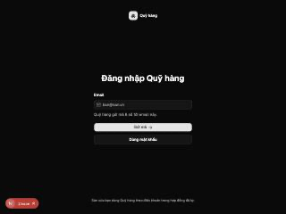
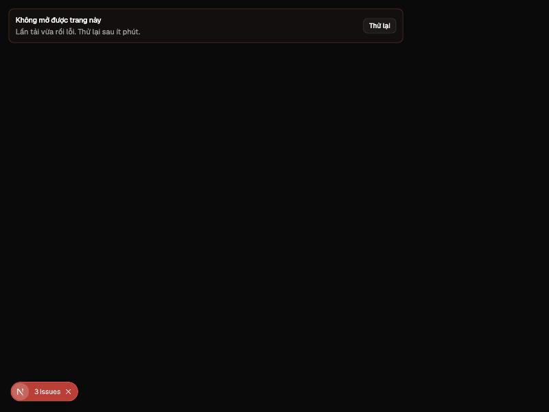
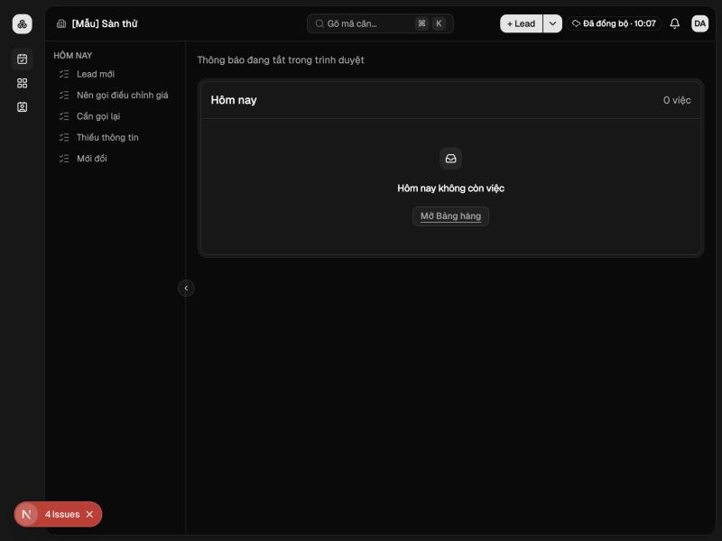
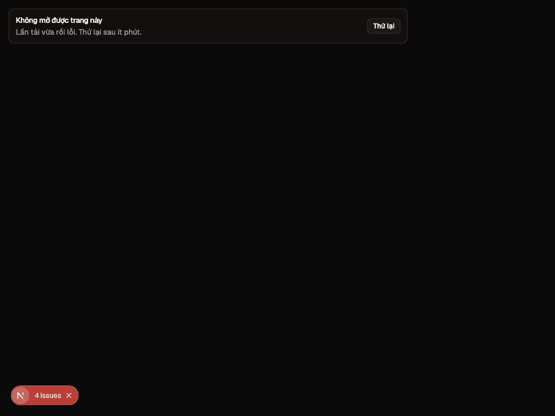

"Vá sự cố bản thật 06/11: người đã đăng nhập không bị đá về màn đăng nhập khi cơ sở dữ liệu nghẽn kết nối — mỗi phiên bản máy chủ giữ ít kết nối và nhả sớm để không cạn trần 15 của pooler, và khi vẫn không đọc được phiên thì hiện trang lỗi kèm «Thử lại» thay vì chuyển về đăng nhập"
Vì sao làm
Sự cố bản thật quyhang.onehub.center 06/11 khoảng 01:29–01:47Z: mọi trang dựng ở máy chủ chuyển người đã đăng nhập về /login. Nhật ký Vercel: EMAXCONNSESSION max clients reached in session mode - max clients are limited to pool_size: 15 ở bước better-auth lấy kết nối; /api/v1/me trả 500 và vỏ coi 500 như chưa đăng nhập. Gốc và cách vá: design doc. Không đổi cơ sở dữ liệu, không đổi chuỗi kết nối bản thật, không đổi packages/.
Đã hứa
- AC-1 — Given phản hồi của `/api/v1/me` cho trang dựng ở máy chủ, When mã là 500, 502 hay 503, Then bộ phân loại ném
- AC-2 — Given `getApi()` dựng kết nối, When dựng hai pool ở hàm trang và API, Then pool danh tính và pool ứng dụng mỗi
- AC-3 — Given chỗ thử `dung-su-co.mjs` (Postgres riêng sau một công tắc mạng ở cổng 5599, phiên thật của Đầu chủ mẫu) và
- AC-4 — Given cây sau bản vá, When so với điểm rẽ khỏi nhánh chính, Then mọi tệp đổi nằm trong danh sách cho phép đích
- AC-5 — Given cây sau bản vá, When chạy kiểm kiểu, lint (luật `quy-hang-ui`, mức nợ 0, kiểm chuẩn), build, sàn thiết kế và
- AC-6 — Given mã nguồn `apps/web/src` (trừ bài kiểm), When soi các nơi đọc phiên, Then đúng ba tệp đọc thẳng
Thiết kế
docs/superpowers/specs/2026-11-06-va-pool-ket-noi-design.md
Quyết định
- 2026-11-06 · Máy · approach · S1 — Đã tra tri thức: Vá sự cố bản thật: pool kết nối cơ sở dữ liệu cạn ở pooler Supabase chế độ session, better-auth không đọc được phiên, người đã đăng nhập bị chuyển về đăng nhập; trang lỗi kèm Thử lạiKho đã khai tri_thuc — bước thiết kế tra trang trước khi chọn.
- 2026-11-06 · Máy · approach · S1 — Giữ pooler chế độ session và thu nhỏ pool của mỗi phiên bản hàm (danh tính 2, ứng dụng 3, nhả rảnh sau 5 giây), không chuyển sang chế độ transaction trong vòng này.Pool danh tính đặt search_path=identity bằng tham số khởi động options mà chế độ transaction không giữ theo giao dịch; chuyển còn phải đổi biến môi trường bản thật.
- 2026-11-06 · Máy · approach · S1 — Gắn cả hai pool vào attachDatabasePool của @vercel/functions (ghim 3.10.2) để Vercel nhả kết nối rảnh trước khi treo phiên bản.idleTimeoutMillis không chạy khi phiên bản hàm bị treo, nên phiên bản treo vẫn giữ chỗ của trần 15 tới khi pooler tự cắt.
- 2026-11-06 · Máy · approach · S1 — Mã 5xx của /api/v1/me là lỗi hạ tầng: ném LoiDocPhien lên ranh giới lỗi có «Thử lại», không chuyển về /login.Chuyển về /login khi cơ sở dữ liệu nghẽn chính là sự cố: người còn phiên hợp lệ bị bắt đăng nhập lại.
- 2026-11-06 · Máy · approach · S1 — Màn đăng nhập bắt LoiDocPhien và vẫn hiện ô đăng nhập như trước; chỉ màn sau đăng nhập đổi sang trang lỗi.Màn đăng nhập chỉ đọc phiên để đẩy người đã đăng nhập đi tiếp; đổi nó ngoài phạm vi sự cố cần vá.
- 2026-11-06 · Máy · descope · S1 — bỏ coverage-scan — sự cố đã có tên và hai lỗi gốc; ba trục (mã của /me, nơi đọc phiên, pool) liệt kê tay ở Coverage; đổi lại không có bằng chứng độ phủ từ bộ quétKhông gian nhỏ và đóng: docPhanHoiMe rẽ theo mã, năm nơi gọi đọc được bằng grep, getApi dựng đúng hai pool.
- 2026-11-06 · Máy · descope · S1 — bỏ design-pass — không màn, chữ hay bố cục mới; trang lỗi cấp tuyến sẵn có chỉ được dùng thêm khi đọc phiên hỏng và nút «Thử lại» dựng lại máy chủẢnh bằng chứng của trang lỗi trên máy dev có ở evidence/E3-today-loi-ha-tang.jpg và eval E3 chụp lại ở S4.
- 2026-11-06 · Máy · descope · S1 — Không chuyển DATABASE_URL bản thật sang pooler chế độ transaction (6543) và không nâng pool_size của Supabase trong vòng này; đề xuất vòng riêng.Cả hai là cấu hình bản thật của chủ kho; chuyển transaction còn cần đổi cách đặt search_path của danh tính.
- 2026-11-06 · Máy · approach · S1 — Giữ pooler chế độ session và thu nhỏ pool của mỗi phiên bản hàm xuống danh tính 2, ứng dụng 2 (tối đa 4), nhả rảnh sau 5 giây; ghim bất đẳng thức chặt 3 phiên bản × 4 + 2 khách khác = 14 < 15.Phản biện (gap-probe F4): 3 × 5 = 15 là chạm trần, và bản xem trước dùng chung DATABASE_URL với bản chính thức.
- 2026-11-06 · Máy · descope · S1 — Màn đăng nhập giữ nguyên hành vi cũ khi cơ sở dữ liệu nghẽn (hiện ô đăng nhập); báo «hệ thống đang lỗi tạm» trên màn đăng nhập để vòng sau.Bản vá sự cố chỉ chữa việc người đã đăng nhập bị đá ra; mọi lối đổi màn đăng nhập là thay đổi hành vi ngoài sự cố.
- 2026-11-06 · Máy · descope · S1 — bỏ design-pass — trang lỗi cấp tuyến đi khuôn trạng thái sẵn có (nhóm trang-thai), không màn, chữ hay bố cục mới; ảnh màn thật đính ở contract làm hình cho Cổng Phạm viLuật giao diện của kho cho bỏ bước phân kỳ khi màn đi khuôn sẵn; eval E9 chấm khuôn trạng thái và E3 chụp màn thật ở S4.
- 2026-11-06 · Máy · approach · S1 — Bài nhìn mở máy dev qua 127.0.0.1 và thêm allowedDevOrigins: ["127.0.0.1"] (chỉ máy dev) thay vì dùng localhost.Lần thử đầu trên localhost bị cookie phiên HttpOnly cùng tên của máy dev dãy khác đè — cookie không tách theo cổng.
- 2026-11-06 · Người · seal · gate1 —
- 2026-11-06 · Máy · fix · S4-r1 — Bước chặn đầu proxy.ts gọi getApi("chan-dau") với bộ pool 1+1; phép tính trần đếm cả hai hàm mỗi bản triển khai: 2 bản × (4 + 2) + 2 = 14 < 15; AC-2, E2, E10 và design sửa theo.Lượt chấm S4-r1 xác nhận (finding trong hợp đồng, AC-2): bản build có /_middleware chạy Node với đồ thị mô-đun riêng nên mỗi bản triển khai có hai bộ pool, tổng thật khoảng 20 > 15.
- 2026-11-06 · Máy · fix · S4-r2 — Chỗ thử cấp phiên mã cố định; E3 đo «không cookie» bằng curl, xoá cookie cũ bằng một lần mở /today khi công tắc mở, rồi kiểm phiên của trình duyệt qua /api/v1/me; thêm dòng 06/11 vào Sổ quyết định của Tham chiếu và cho phép tệp ấy ở AC-4/E4.Lượt S4-r2 BLOCKED ở E3: trình duyệt chung giữ cookie HttpOnly của lượt 1 (mã ngẫu nhiên đã chết) nên JS không đặt được cookie và bước «không cookie» lệch; review chỉ ra bản vá đổi hành vi người dùng thấy mà Tham chiếu chưa ghi (AGENTS.md).
- 2026-11-06 · Máy · revisit · gate2 — Ngoài-1: ghi Known limitsmáy tự định tuyến theo đề xuất S4 «known-limits» — kho bật feature_loop.ngoai_n_tu_dinh_tuyen
- 2026-11-06 · Máy · revisit · gate2 — Ngoài-2: chấp nhận, không sửamáy tự định tuyến theo đề xuất S4 «wont-fix» — kho bật feature_loop.ngoai_n_tu_dinh_tuyen
- 2026-11-06 · Máy · revisit · gate2 — Ngoài-4: ghi Known limitsmáy tự định tuyến theo đề xuất S4 «known-limits» — kho bật feature_loop.ngoai_n_tu_dinh_tuyen
- 2026-11-06 · Máy · revisit · gate2 — Ngoài-5: ghi Known limitsmáy tự định tuyến theo đề xuất S4 «known-limits» — kho bật feature_loop.ngoai_n_tu_dinh_tuyen
- 2026-11-06 · Máy · revisit · gate2 — Ngoài-6: ghi Known limitsmáy tự định tuyến theo đề xuất S4 «known-limits» — kho bật feature_loop.ngoai_n_tu_dinh_tuyen
Bằng chứng
Các eval
| Eval | Tiêu chí | Loại | Verdict | run_id | verified_at |
|---|---|---|---|---|---|
| E1 | AC-1 | test | PASS | minted-va-pool-ket-noi-E1-r2 | 2026-11-06T03:04:38Z |
| E2 | AC-2 | test | PASS | minted-va-pool-ket-noi-E2-r2 | 2026-11-06T03:04:38Z |
| E3 | AC-3 | ui-check | PASS | minted-va-pool-ket-noi-E3-r2 | 2026-11-06T03:04:38Z |
| E4 | AC-4 | script | PASS | minted-va-pool-ket-noi-E4-r2 | 2026-11-06T03:04:38Z |
| E5 | AC-5 | script | PASS | minted-va-pool-ket-noi-E5-r2 | 2026-11-06T03:04:38Z |
| E6 | AC-5 | script | PASS | minted-va-pool-ket-noi-E6-r2 | 2026-11-06T03:04:38Z |
| E7 | AC-5 | script | PASS | minted-va-pool-ket-noi-E7-r2 | 2026-11-06T03:04:38Z |
| E8 | AC-5 | script | PASS | minted-va-pool-ket-noi-E8-r2 | 2026-11-06T03:04:38Z |
| E9 | AC-5 | script | PASS | minted-va-pool-ket-noi-E9-r2 | 2026-11-06T03:04:38Z |
| E10 | AC-6 | script | PASS | minted-va-pool-ket-noi-E10-r2 | 2026-11-06T03:04:38Z |
Chi tiết từng eval
PASS E1 · test
AC-1: Given phản hồi của `/api/v1/me` cho trang dựng ở máy chủ, When mã là 500, 502 hay 503, Then bộ phân loại ném
ℹ duration_ms 3111.591041
PASS E2 · test
AC-2: Given `getApi()` dựng kết nối, When dựng hai pool ở hàm trang và API, Then pool danh tính và pool ứng dụng mỗi
ℹ duration_ms 3111.591041
PASS E3 · ui-check
AC-3: Given chỗ thử `dung-su-co.mjs` (Postgres riêng sau một công tắc mạng ở cổng 5599, phiên thật của Đầu chủ mẫu) và






PASS E4 · script
AC-4: Given cây sau bản vá, When so với điểm rẽ khỏi nhánh chính, Then mọi tệp đổi nằm trong danh sách cho phép đích
ℹ duration_ms 86.205083
PASS E5 · script
AC-5: Given cây sau bản vá, When chạy kiểm kiểu, lint (luật `quy-hang-ui`, mức nợ 0, kiểm chuẩn), build, sàn thiết kế và
typecheck hoàn tất trên mọi gói
PASS E6 · script
AC-5: Given cây sau bản vá, When chạy kiểm kiểu, lint (luật `quy-hang-ui`, mức nợ 0, kiểm chuẩn), build, sàn thiết kế và
chuẩn giao diện: đạt
PASS E7 · script
AC-5: Given cây sau bản vá, When chạy kiểm kiểu, lint (luật `quy-hang-ui`, mức nợ 0, kiểm chuẩn), build, sàn thiết kế và
next build hoàn tất
PASS E8 · script
AC-5: Given cây sau bản vá, When chạy kiểm kiểu, lint (luật `quy-hang-ui`, mức nợ 0, kiểm chuẩn), build, sàn thiết kế và
design-floor-s4 hoàn tất
PASS E9 · script
AC-5: Given cây sau bản vá, When chạy kiểm kiểu, lint (luật `quy-hang-ui`, mức nợ 0, kiểm chuẩn), build, sàn thiết kế và
2 tệp giao diện ngoài bản đồ
PASS E10 · script
AC-6: Given mã nguồn `apps/web/src` (trừ bài kiểm), When soi các nơi đọc phiên, Then đúng ba tệp đọc thẳng
ℹ duration_ms 86.205083
Eval không phân biệt (Analyst)
Vòng verify
- Round 1: chi tiết không được truyền xuống vòng này; xem run-log.jsonl và lịch sử commit (S4-r1, S4-r2).
- Round 2: E1 đến E10 đều đạt, không eval đỏ; chỗ thử sự cố E3 dùng phiên mã cố định nên không phụ thuộc cookie cũ.
Tài nguyên
| Khối | Tác tử | Token đầu ra |
|---|---|---|
| S4 round 1 | 21 | 61.963 |
| S4 round 2 | 20 | 60.517 |
| S4 round 2 (thử lại) | 21 | 67.847 |
3 lượt chấm · tổng 190.327 token
Giới hạn và ngoài hợp đồng
- Chuyển `DATABASE_URL` bản thật sang pooler chế độ transaction (cổng 6543) — cần đổi cách đặt `search_path` của danh tính và đổi biến môi trường bản thật.
- Nâng `pool_size` của pooler Supabase hay nâng gói — việc cấu hình bản thật của chủ kho.
- Cảnh báo better-auth «Rate limiting could not determine a client IP» ở trang dựng ở máy chủ.
- Chữ, bố cục, thành phần của trang lỗi.
Giao
chưa ghi quan sát production